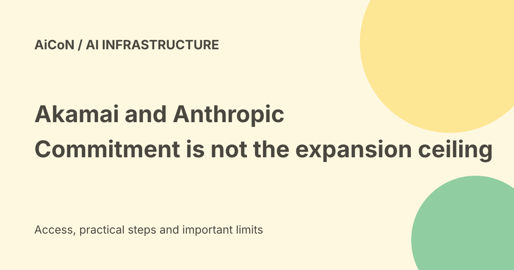

Akamai and Anthropic cloud deal: committed spend, possible expansion and warrants
Akamai announced an expanded Anthropic relationship on 24 September 2026, with an 11.6-billion-dollar contractual commitment over seven years. The roughly twenty-billion-dollar headline includes possible expansion, not only spending already committed.

What was announced?
Akamai's release says its distributed cloud infrastructure and software will support Anthropic's growing CPU workloads. The same release is filed with the US Securities and Exchange Commission.
A CPU is a general-purpose processor. AI services need more than model-training GPUs: applications, tools and supporting software also need computing capacity. The announcement is about CPU workload demand, not a claim that CPUs replace every AI accelerator.
Eleven point six billion versus twenty billion
The announced contractual commitment is 11.6 billion dollars over seven years. The release describes a potential additional nine billion dollars, giving a total potential commitment of approximately twenty billion.
Adding the amounts gives 20.6 billion dollars; the company uses an approximate twenty-billion framing. Do not present the larger figure as fully committed spending today.
A multiyear commitment is not immediate revenue
A cloud contract can generate revenue over the service period. The headline is not a statement that Akamai received the whole amount as cash on announcement day.
The company says the agreement has no expected impact on its 2026 revenue guidance. A reader should separate contractual scale from the timing of deliveries, revenue and cash.
What is a warrant?
A warrant gives its holder a right to purchase securities under stated conditions. It is different from simply being given a fully vested ordinary shareholding.
Akamai says Anthropic received a warrant for non-voting convertible Series B preferred stock, representing about 7.7 million common shares on an as-converted basis, or up to roughly five percent of common stock outstanding.
Vesting is tied to expansion
The release says a portion representing about two percent is expected to vest in connection with the announced commitment. The remaining roughly three percent would vest as the relationship expands by up to an additional nine billion dollars within the warrant's seven-year term.
It describes roughly one percent vesting for each additional three-billion-dollar purchase of cloud services at mutually agreed terms. This is conditional structure, not a guarantee that all five percent has vested.
Exercise price
The release gives an exercise price of 111.33 dollars per common share on the stated basis. This explains the warrant's terms, not today's market price or an investment recommendation.
For detailed legal terms, read the actual filing and agreements rather than relying on a rounded press-release summary.
Infrastructure investment
Akamai estimates about 5.5 billion dollars in capital expenditure related to the commitment. Capital expenditure means spending on assets and infrastructure rather than ordinary day-to-day expenses.
The company also anticipates a roughly 1.7-billion-dollar increase in 2026 capital expenditure to secure and pre-purchase supply-chain components, including memory. These are company estimates, not completed-spend figures verified for this guide.
Earlier commitments are separate
The release says the agreement adds to more than 2.8 billion dollars in multiyear cloud infrastructure commitments across Akamai's customer base announced earlier in the year.
Do not label that earlier customer-wide figure as another Anthropic-only contract. The scope of the number matters.
What does this mean for Indian users?
This is a corporate infrastructure agreement, not an Indian public subsidy, free compute scheme or new Claude consumer plan.
It does not establish a price change, additional free messages or a new India-region service guarantee for an individual user. Use the relevant product's current offer for those questions.
Risks in the announcement
Akamai labels future benefits and expansion as forward-looking statements. Its release names risks including supply-chain constraints, financing, competition, defects, security breaches and delivery problems.
A large commitment is evidence of commercial demand. It is not proof that all infrastructure, revenue or future expansion will arrive as expected.
How to read the story carefully
- Separate current commitment from possible expansion.
- Keep the seven-year period attached to the amount.
- Distinguish contract value, revenue and cash.
- Read stock-warrant conditions separately.
- Label capital expenditure as an estimate.
- Use current financial reports for later developments.
No investment, financial transaction or cloud account was opened for this guide.
What changed since the original post?
We add the difference between a warrant and vested ownership, the announcement's own approximate total and the timing distinction between multiyear commitment and current revenue. The consumer free-versus-paid verdict is unchanged: this is not a new public product offer.
Frequently asked questions
Is twenty billion dollars fully committed?
No. The headline includes potential expansion.
Does Anthropic already own five percent?
The announcement describes a warrant with conditional vesting, not that simple conclusion.
Does this make Claude free?
No such offer is established.
Sources: Akamai corporate release · Same release filed with the SEC. Checked 7 October 2026.